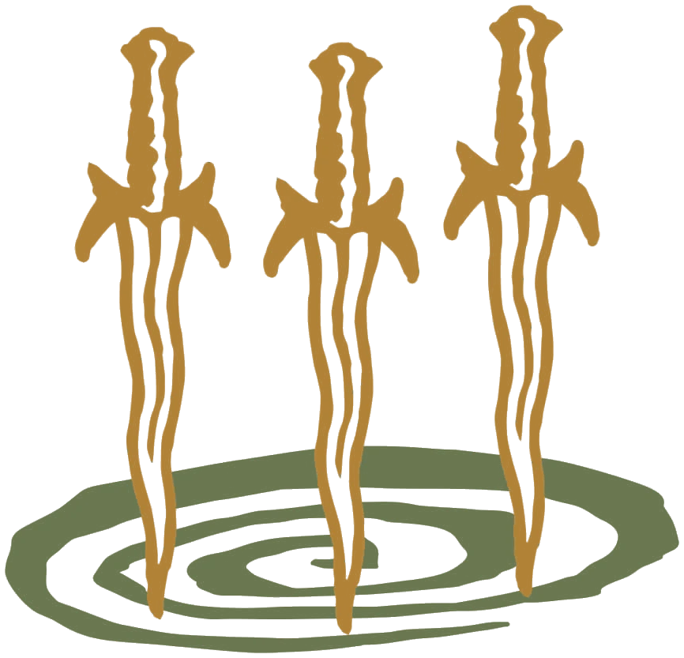
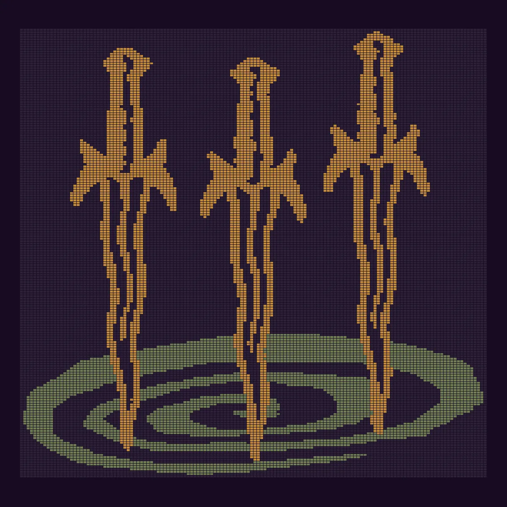

Основа визуала
Из чего собран черновик 2: цвета бренда, один шрифт, имя во всю ширину и вязка вместо фотографий.
Цвета
Ночь и лаванда#170B21 · фон всего сайта. #9D94F1 · только знак и имя
Бархат#24152F · ячейки и корешки
Пергамент#ECE5CB · основной текст
Пепел#B8AFC8 · второстепенный текст
Солома#C0B387 · одно действие на экране и поле подвала, из образца ткани
Охра#B08236 · клинки «Мечей», метка дропа
Олива#85936A · водоворот «Мечей», метка коллаборации
Шрифт
Линия «Мечи»
Крутани волчок
Libre Franklin, 400–600, с кириллицей. Один гротеск на весь сайт: заголовки, цены, подписи.
Готика осталась только в имени. Имя здесь знак, им не набирают текст: оно стоит во всю ширину в первом экране и в подвале.
Пять размеров: 64, 42, 26, 19 и 14 пикселей на широком экране.
Вязка вместо фото
Пока у сайта нет снимков вещей, картинки собраны из рисунка самого бренда. Когда придут фото, они встанут на те же места.



Правила
- Одна соломенная кнопка на экран, это главное действие. Остальное: текст и тёмные ячейки.
- Без рамок, линий, теней и свечения: вещи держит темнота вокруг них.
- Лаванда только у знака и имени, текст ею не набирают.
- Цены стоят в тексте рядом с названием, скидка видна по зачёркнутой старой цене.
- Рамки редкости рисует художник от руки; они лягут поверх вещи в каталоге и в «Крутани волчок».
Что нужно от бренда
- Фото вещей и лукбуков на тёмном фоне, один источник света.
- Логотип в векторе: сейчас стоит трассировка со скриншота.
- Исходники жаккардов «Мечи» и «Демон» и настоящие цвета пряжи.
- Манифесты всех 22 глав и проверка текстов на главной.